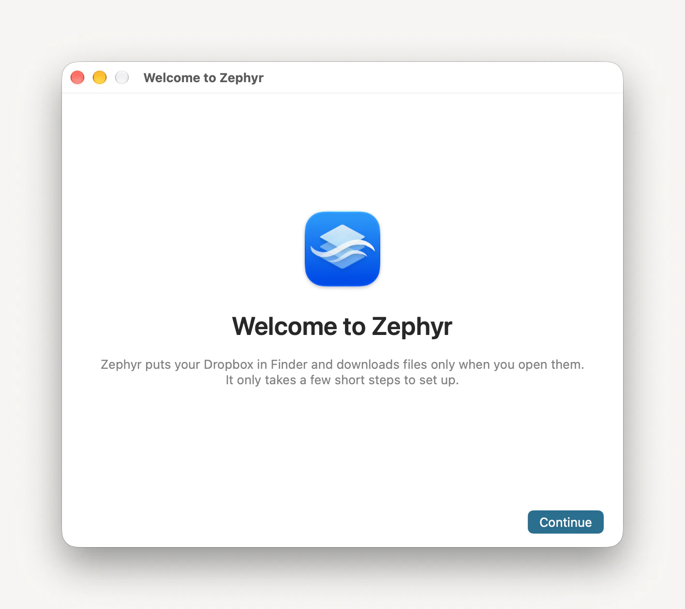

La première fois que vous ouvrez Zephyr, une fenêtre intitulée Bienvenue dans Zephyr s’affiche. Elle vous guide pour associer un compte Dropbox et accorder les trois autorisations que vous seul pouvez donner.

Lisez Bienvenue dans Zephyr et Ce dont Zephyr a besoin, en cliquant sur Continuer après chacune.
Sur la page Associer votre compte Dropbox, associez un compte.
Vous autorisez l’accès sur la page de Dropbox elle-même, de sorte que votre mot de passe ne parvient jamais à Zephyr — consultez Associer votre compte Dropbox. Rien de ce qui suit n’est possible sans cette étape : macOS n’a aucun fournisseur de fichiers à vous proposer tant qu’aucun compte n’en a fourni un à Zephyr.
Sur la page Activer Zephyr dans le Finder, cliquez sur Ouvrir Réglages Système, puis activez Zephyr sous Fournisseurs de fichiers.
La page surveille ce réglage et affiche Activé. Votre Dropbox est dans le Finder. dès que vous l’avez fait.
Sur la page Autoriser les notifications, cliquez sur Autoriser les notifications et répondez à la demande de macOS.
macOS ne demande qu’une seule fois. S’il a déjà enregistré une réponse, le bouton affiche Ouvrir « Notifications » et vous renvoie à la place vers Réglages Système.
Sur la page Ouvrir Zephyr à l’ouverture de session, cliquez sur Ouvrir à l’ouverture de session.
Sur la page Zephyr est prêt, cliquez sur Ouvrir dans le Finder pour accéder directement à vos fichiers, puis cliquez sur Terminé.
Remarque : Vous pouvez remettre à plus tard chacune des trois autorisations — Continuer n’est jamais bloqué par l’une d’elles. Zephyr indique en bas de sa fenêtre lesquelles restent à accorder ; consultez Si Zephyr attend votre autorisation.
Cliquez sur Zephyr dans la barre des menus, puis sur Gérer les comptes…
Zephyr ne garde aucune fenêtre ouverte de lui-même : ses menus ne figurent donc dans la barre des menus que lorsque l’une de ses fenêtres est au premier plan.
Choisissez Aide ▸ Configurer Zephyr…
La configuration s’ouvre de nouveau à la première page et n’annule rien. Une page dont vous avez déjà accordé l’autorisation l’indique au lieu de la demander une seconde fois.
À la place de la page Activer Zephyr dans le Finder, la configuration peut afficher Zephyr s’exécute depuis une copie. macOS exécute alors Zephyr depuis une copie temporaire qui lui est propre, et n’enregistre pas de fournisseur de fichiers pour une copie — il n’y a donc aucun réglage à trouver, et le reste de la configuration ne peut pas aboutir.
Cliquez sur Télécharger le programme d’installation.
Quittez Zephyr, ouvrez le paquet d’installation que vous avez téléchargé et suivez-le.
Rouvrez Zephyr, puis parcourez la configuration depuis le début.
Il s’agit de la version guidée de la solution décrite dans Si votre Dropbox n’apparaît pas dans le Finder, qui explique aussi comment effacer l’indicateur à la main si vous préférez ne pas télécharger Zephyr de nouveau.